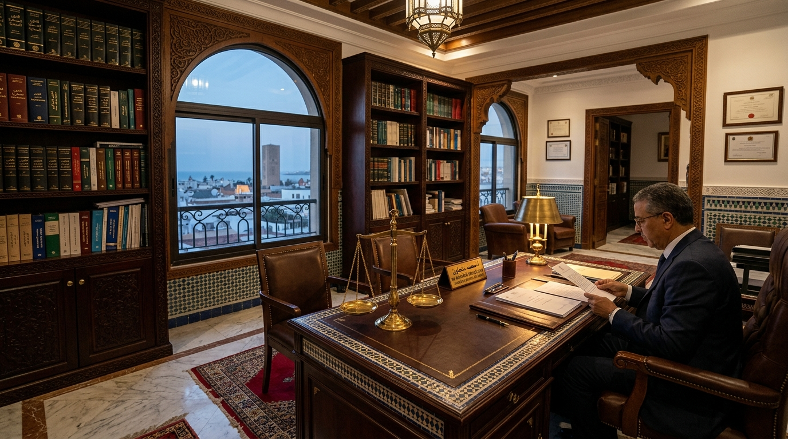

Droit des Affaires
قانون الأعمال والشركات
مواكبة المقاولات في التأسيس، تحرير الاتفاقيات، صعوبات المقاولات، والنزاعات التجارية أمام المحكمة التجارية بالرباط.
مكتب الأستاذ عبد الرحمان عبود (Maitre Aboud Abderrahman) بالرباط، يقدم استشارات قانونية متعمقة، وترافعاً قضائياً حازماً، ومواكبة دقيقة في قضايا الأفراد، الأسرة، العقار، ونزاعات الشركات والمقاولات في سائر محاكم المملكة المغربية.

"مهنة المحاماة رسالة نبل وعدالة؛ هدفنا ليس فقط كسب الدعوى، بل تقديم الحماية القانونية الاستباقية التي تجنب موكلينا النزاعات وتحفظ أموالهم وحرياتهم."
— الأستاذ عبد الرحمان عبود، محامٍ بهيئة الرباطمحامٍ مسجل بجدول هيئة المحامين بالرباط، إحدى أعرق وأهم الهيئات القضائية في المملكة المغربية. يرتكز عمل المكتب على تراكم معرفي دقيق بمقتضيات المنظومة التشريعية المغربية والاجتهادات القضائية الصادرة عن محكمة النقض ومحاكم الاستئناف.
يقع مكتب الأستاذ عبد الرحمان عبود في موقع استراتيجي وتاريخي بالعاصمة الرباط (حي يعقوب المنصور، شارع المجد)، وهو مجهز بأحدث الوسائل التقنية للمتابعة الدقيقة لكل ملف قضائي، سواء للمواطنين المقيمين بالرباط والمغرب أو لأفراد الجالية المغربية المقيمة بالخارج (MRE).
عضو ممارس بهيئة المحامين بالرباط، ملتزم بأخلاقيات وتقاليد المهنة وفق القانون 28.08.
مقبول للترافع أمام المحاكم الابتدائية ومحاكم الاستئناف والمحاكم التجارية والإدارية.
اتفاقيات أتعاب واضحة ومسبقة مكتوبة تضمن راحة الموكل وتحدد التزامات كل طرف.
مواكبة المستثمرين ومغاربة الخارج في إدارة ممتلكاتهم وعقودهم بالمغرب عن بعد.
يقدم مكتب الأستاذ عبد الرحمان عبود تغطية قانونية متكاملة في 12 مجالاً تخصصياً بموجب القوانين والمدونات المغربية النافذة.
مواكبة المقاولات في التأسيس، تحرير الاتفاقيات، صعوبات المقاولات، والنزاعات التجارية أمام المحكمة التجارية بالرباط.
المؤازرة الفورية أثناء الحراسة النظرية والتحقيق الإعدادي، والترافع أمام غرف الجنايات والجنح والشكايات المباشرة.
دعاوى التطليق للشقاق، النفقة، الحضانة، قسمة التركات والميراث، وثبوت الزوجية باحترافية وسرية تامة تحمي الأطفال.
نزاعات الملكية العقارية، دعاوى التحفيظ والتعرضات، عقود الكراء السكني والتجاري، ومساطر الإفراغ واسترجاع الحيازة.
دعاوى الإلغاء ضد القرارات الإدارية، التعويض عن أضرار مرافق الدولة، نزع الملكية للمنفعة العامة، ومنازعات الصفقات.
تحصيل أعلى التعويضات عن الأضرار البدنية والمادية بموجب ظهير 1984، تعيين الخبراء الأطباء، ومواجهة شركات التأمين.
قضايا الفصل التعسفي، استرجاع الأجور ومكافأة نهاية الخدمة، حوادث الشغل والأمراض المهنية، ومساطر مفتشية الشغل.
المنازعات البنكية، القروض والرهون الرسمية، رفع اليد عن الضمانات، صعوبات الأداء، ومساطر الحجز على الأرصدة البنكية.
نزاعات الشحن البحري للبضائع، تلف الحاويات، الحجز على البواخر بالموانئ المغربية، وعقود الملاحة البحرية.
تطبيق قانون الالتزامات والعقود (DOC)، المسؤولية المدنية، النزاعات العقدية، جبر الضرر، وصياغة العقود المتنوعة.
الطعن في الفروض الضريبية، الدفاع أمام اللجان المحلية والوطنية، رفع اليد عن مساطر الإشعار للغير الحائز (ATD).
قضايا القذف والسب عبر الإنترنت، الجرائم الإلكترونية والتشهير، حماية المعطيات الشخصية (CNDP) وحرية الرأي والتعبير.
اختر نوع قضيتك من الأسئلة الأكثر شيوعاً أو اكتب استفسارك مباشرة للحصول على توجيه أولي مستند للقانون المغربي قبل موعدك بالمكتب.
نؤمن بأن الثقة تبدأ بالوضوح التام. تعرف على المدد الزمنية المتوقعة وطريقة تحديد الأتعاب وفق القانون المنظم لمهنة المحاماة بالمغرب.
تشمل دراسة كافة العقود والوثائق، تشخيص الموقف القانوني بدقة، واقتراح أنسب استراتيجية قضائية أو تفاوضية لحفظ حقوقكم.
تثبيت الموعد لمناقشة هذا الملفاملأ الاستمارة لحجز جلسة استشارة مع الأستاذ عبد الرحمان عبود. سيتواصل معكم المكتب فوراً لتأكيد التوقيت المناسب وتجهيز الملف.
إجابات واضحة ومبسطة لأبرز تساؤلات الموكلين حول اللجوء إلى القضاء واختيار المحامي وحماية الحقوق.
يجب التأكد أولاً من تسجيل المحامي بجدول إحدى هيئات المحامين المعترف بها بالمغرب (مثل هيئة المحامين بالرباط). المحامي الموثوق هو من يتصف بالوضوح والصراحة بشأن فرص نجاح القضية والمخاطر المترتبة، ويقدم اتفاقاً مكتوباً للأتعاب، ويحرص على إشراك الموكل في مستجدات ملفه مع احترام السرية المهنية المطلقة المنصوص عليها في القانون 28.08.
وفقاً للمادة 45 من القانون رقم 28.08 المنظم لمهنة المحاماة، تخضع الأتعاب لحرية الاتفاق والتراضي بين المحامي وموكله. وتحدد بالنظر إلى أهمية النزاع، تعقيد الإجراءات، الوقت والجهد المبذول، والخبرة المهنية للمحامي. في مكتب الأستاذ عبد الرحمان عبود، يتم الاتفاق مسبقاً وبكل شفافية قبل مباشرة أي إجراء، مع إمكانية تجزئة الأداء بحسب مراحل التقاضي.
تعتبر جلسة الاستشارة الأولى خطوة تشخيصية جوهرية؛ يقوم الأستاذ عبود بالاستماع الدقيق لتفاصيل الواقعة، ودراسة الوثائق والمستندات المدلى بها، ثم بيان الموقف القانوني بدقة: هل النزاع يتطلب حلاً ودياً وتفاوضياً؟ أم يستلزم اللجوء الفوري إلى القضاء؟ مع توضيح الآجال، الصوائر القضائية، وتحديد خطة العمل المتكاملة.
تتطلب كل مادة قانونية (مدني، جنائي، أسرة، عقار، أعمال) تراكماً واطلاعاً دقيقاً على الاجتهادات القضائية لمحكمة النقض. يتميز مكتب الأستاذ عبد الرحمان عبود بالرباط بامتلاكه خبرة واسعة في الترافع في 12 مجالاً تخصصياً، ما يمكنه من التعامل مع الملفات ذات الطبيعة المركبة (كالنزاعات التجارية المتشابكة مع الجنائي أو العقاري).
يغطي المكتب 12 مجالاً رئيسياً: قانون الأعمال والشركات، القانون الجنائي والمساطر الزجرية، قانون الأسرة ومدونة الأحوال الشخصية، القانون العقاري والتحفيظ، القانون الإداري والتعويض ضد الدولة، قانون التأمين وحوادث السير (ظهير 1984)، قانون الشغل والنزاعات الاجتماعية، القانون البنكي، القانون البحري، القانون المدني والعقود، القانون الضريبي والجباية، وقانون الصحافة والجرائم الرقمية.
ننصح بإحضار: (1) أصول أو نسخ واضحة من العقود أو الاتفاقيات ذات الصلة، (2) المراسلات والإنذارات المتبادلة أو محاضر التبليغ، (3) محاضر الشرطة أو الدرك في القضايا الزجرية وحوادث السير، (4) شهادات الملكية والتصاميم في القضايا العقارية، (5) نسخة من البطاقة الوطنية للتعريف لتوثيق التوكيل.
تختلف الآجال بحسب طبيعة المحكمة ونوع الإجراء: فالمساطر الاستعجالية والأوامر بالأداء قد تستغرق بضعة أيام إلى أسابيع؛ بينما تستغرق دعاوى الأسرة وحوادث السير وقضايا الشغل في المرحلة الابتدائية ما بين شهرين إلى 6 أشهر في المتوسط. أما القضايا العقارية والتجارية المعقدة فتتطلب وقتاً أطول بسبب إجراءات الخبرات القضائية وأبحاث المحكمة.
نعم بكل تأكيد. يتيح المكتب خدمة الاستشارات القانونية عن بعد عبر الهاتف أو تطبيقات الفيديو المشفرة والواتساب، وهي خدمة ملائمة بشكل خاص لأفراد الجالية المغربية بالخارج (MRE) أو المستثمرين والمواطنين خارج مدينة الرباط، مع إمكانية تبادل المستندات والوكالات إلكترونياً.
المحامي: هو المدافع والممثل الحصري أمام القضاء، يقدم الاستشارات ويترافع ويصيغ المقالات والدفوع؛
الموثق (Notaire): يختص بتوثيق العقود الرسمية كعقود البيع العقاري والشركات وإضفاء الصبغة الرسمية عليها دون ترافع قضائي؛
المفوض القضائي (Huissier de justice): هو المكلف بإجراءات التبليغ والتنفيذ للأحكام والإنذارات القضائية والمعاينات المادية بأمر قضائي.
نعم، يقر القانون المغربي نظام المساعدة القضائية (بموجب مرسوم 1 نونبر 1966) للأشخاص المعوزين الذين لا يتوفرون على الموارد المالية الكافية للدفاع عن حقوقهم أمام المحاكم. يمنحها مكتب المساعدة القضائية بالنيابة العامة بناءً على شهادة العوز، ويقوم نقيب هيئة المحامين بتعيين محامٍ متمرن أو ممارس لمؤازرة المستفيد مجاناً.
نفخر بثقة موكلينا من مقاولات، أسر، ومواطنين داخل أرض الوطن وخارجه.
"تعاملت مع الأستاذ عبد الرحمان عبود في نزاع تجاري معقد لتحصيل ديون مقاولتي بالرباط. كفاءة عالية وسرعة فائقة في استصدار أمر بالأداء والحجز. محامٍ مخلص ومهني بكل ما تحمله الكلمة من معنى."
"أنا مقيم بفرنسا وكان لدي ملف عقاري شائك حول تركة ونزاع حيازة. قام الأستاذ عبود بمتابعة الدعوى وإخباري بكل جلسة أولاً بأول حتى صدور الحكم النهائي لصالحنا. أنصح به بشدة لمغاربة الخارج."
"متابعة دقيقة في ملف تعويض عن حادثة سير، وحصولي على تعويض عادل أنصفني بعدما رفضت شركة التأمين أداء مستحقات العجز. تعامل راقٍ وشفافية كاملة في حساب الأتعاب."
هل سبق لك التعامل مع مكتب الأستاذ عبد الرحمان عبود؟ رأيك يهمنا لمواصلة تقديم أفضل خدمة قانونية.
يقع المكتب في موقع حيوي يسهل الوصول إليه بحي يعقوب المنصور بالرباط، مع سهولة التواصل الهاتفي والرقمي.
رقم 11 شارع المجد، شقة رقم 2، الطابق الثاني، يعقوب المنصور (C Y.M)
الرباط - المملكة المغربية
الخط الهاتفي المباشر للمكتب متاح طيلة أيام العمل:
06 61 70 45 54
إمكانية إرسال وثائق الاستشارة والملفات مباشرة عبر تطبيق واتساب:
+212 6 61 70 45 54
من الإثنين إلى الجمعة: 09:00 صباحاً – 18:00 مساءً
السبت: 09:00 صباحاً – 13:00 زوالاً (للاستشارات المبرمجة بموعد مسبق)
(للحالات الجنائية الطارئة والحراسة النظرية: الهاتف مفتوح 24/7)